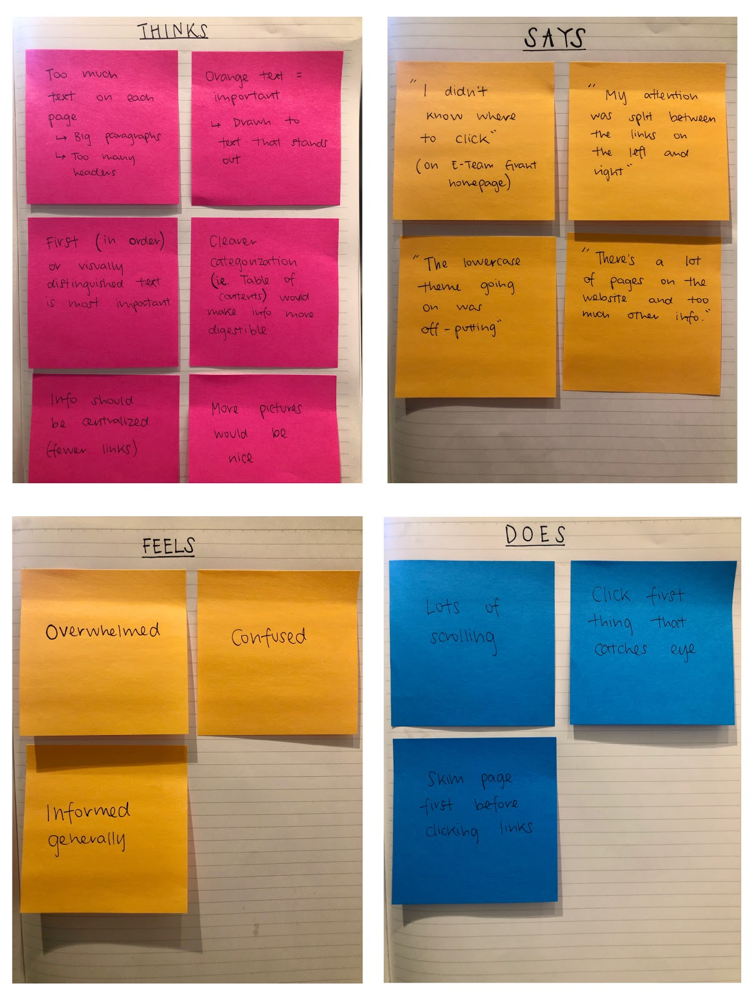
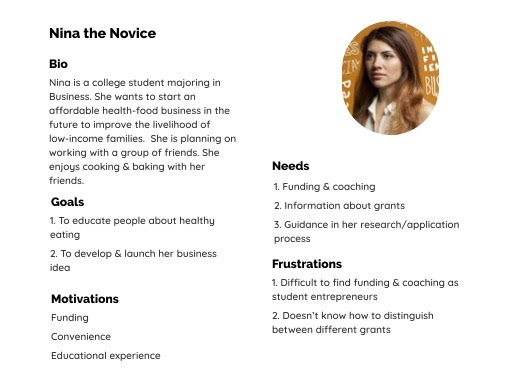
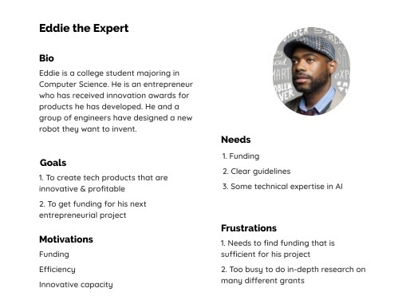
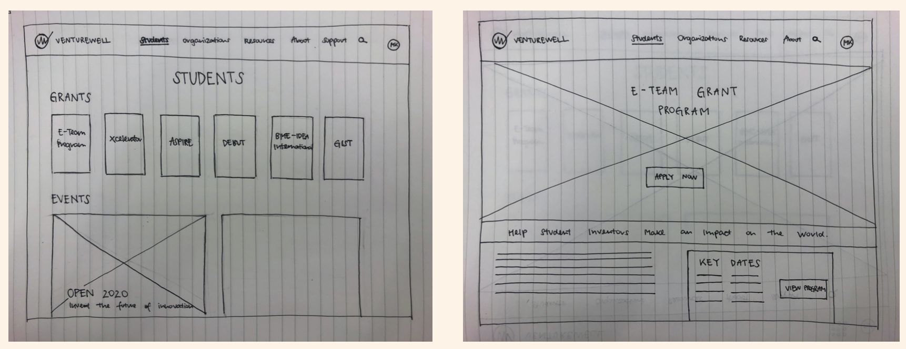
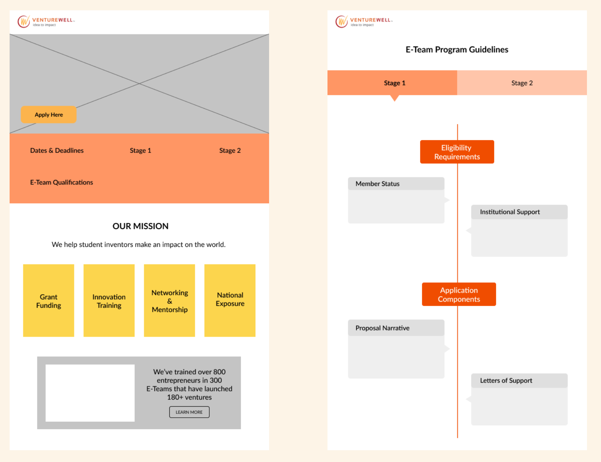
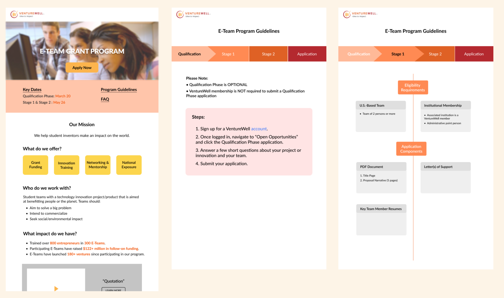
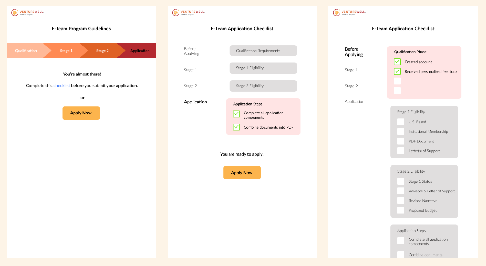
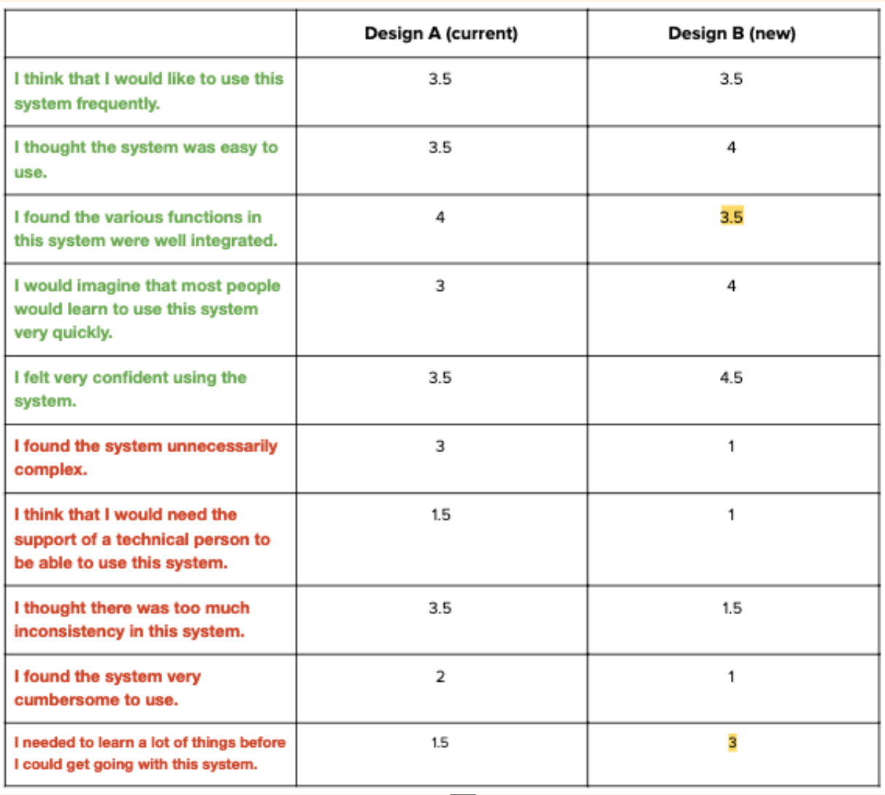

Project Description:
VentureWell is an organization that provides grants and support for students & educators driving innovative entrepreneurial projects. For my capstone project at UMSI, my team has been paired to work with VentureWell to improve the usability of the E-Team Grant Program section of their website. We will redesign the VentureWell website’s E-Team Grant section to better guide users through the application process and meet their needs (access to information, resources, convenience, etc.) and improve the current and prospective users’ experiences and understanding of the program.
Research Plan and Methodologies:
Method #1 - Heuristic Evaluation- Purpose: To identify aspects of the VentureWell website that violate the series of heuristics that we outlined
- Methodology: Each member walked through the website and identified issues related to the heuristics.
- Purpose: To compare VentureWell’s products & offerings to similar organizations and identify what sets it apart from competitors.
- Methodology: We identified four of VentureWell’s competitors and researched how VentureWell matches up to them with regards to six categories: Number of deadlines for grants potential funding, Training, Mentorship, Team size, Institution membership, and Application requirements
- Purpose: To gather qualitative data on users interactions with the website and evaluate the effectiveness of the current user experience in allowing users to complete important tasks.
- Methodology: We conducted usability tests with students at the University of Michigan. We presented each participant with the same set of tasks, and through observation, evaluated their success/failure in completing each task.
- Purpose: We will be conducting interviews with prior VentureWell E-Team grant applicants to get insight into their experiences.
- Methodology: we will conduct a series of interviews to inquire about their experiences
Research Results:
We created an empathy map that represents the collective thoughts, feelings, actions, and voices of the usability test participants.
Themes & Insights
After analyzing our research, we found many common themes between different users’ pain points on the VentureWell site. These fell into three main categories:
- Unclear Navigation of Pages- users were confused by the categories under the navigation bar
- Inefficient Presentation of Information- information seems cluttered and it’s hard to find what you need
- Not-User Friendly Visuals- the graphics being used onsite are hard to read
User Personas
After conducting our research, we brainstormed two user personas for the VentureWell grant application
 UX Requirements
We identified four requirements to plan for the design phase of our project and help us complete our goals
- Comprehensive, clear navigation throughout website (terminology & categorization)
- Prioritization and clear communication of most important program information
- Program information & guidelines are accessible and effectively differentiated for different types of users
- Consistent visual layout & organization of elements throughout website
Design Phase
Our design process looks something like this:
Brainstorming -> Sketching -> Feedback -> Low-fi / mid-fi wireframing->Feedback->Iteration->Usertesting->Iteration->Feedback-> Hi-fi wireframing -> User testing -> Iteration -> Feedback
Based on our findings from our UX research–specifically through our heuristic evaluation and usability testing–we identified specific aspects of the E-Team Grant homepage & guidelines pages that would be most impactful to focus on in terms of redesigning. This includes:
- Prioritizing the most important information at the top of the page (i.e. dates, link to guidelines, link to application)
- Creating a navigable storyline for each page - presenting information in a cohesive way that guides users through each succeeding set of information
- Language that speaks directly to the user
- Use of timelines
- Features that users can interact with & is personalized to their application
- Streamlined visual design components across the pages
Sketches
After outlining these specific priorities, each member on our team created basic sketches of how we envisioned them being incorporated into the current E-Team Grant Program web pages.
Low/Mid-fi Wireframing
We each created low/mid-fi wireframes and presented them to each other. Within our team, we decided on which ones we collectively liked the best and fit our defined requirements most effectively. We presented those designs in stand-up and taking the feedback we got, we narrowed in on one design that received the most positive feedback. We iterated on it, adding elements of some of the other designs that we liked and changing different aspects of the design based on the peer feedback we received.
User Testing
We tested our wireframes with University of Michigan students. We recruited 5 users around campus who were involved in the Entrepreneurship community. We asked them to look through our designs and answer the following questions:
- Can you find the button to apply?
- Are you able to find the key dates for this application easily?
- Does the VentureWell mission stand out on this page?
- On the E-Team Program Guidelines, is it clear how to find the guidelines for Stage 1 and Stage 2?
Findings
- Users expressed the “Apply Now” button was easy to find, but it should be moved to the middle of the page to ensure that it is one of the first things you see on the screen.
- Users explained that Dates and Deadlines should explicitly list out the most important application timeline dates in its own section of the page, so that users can easily figure out if this program can match their own timelines to apply.
- Users verified that VentureWell’s mission statement & offerings were made clear in our design that stood out on the page.
- On the E-Team Program Guidelines page, users found it was confusing to know when they were on Stage 1 versus when they were on Stage 2.
High-fi Wireframing
 Design Validation: A/B Testing
Purpose:
Test the current VentureWell E-Team Grant Program pages and our proposed designs to determine which one is preferred and more among users and more effective in fulfilling our project goals & requirements
Methodology:
Number of participants: 4
Groups: 2 groups - we created these two variants in order to minimize the impact of order bias on the overall findings.
Format: In-person or virtual (Zoom)
Procedure:
For participants in Group A, we showed them the four screens for Design A first. We asked them to go through each page and speak their thoughts out loud as they looked at the designs. After looking at Design A, we gave them the System Usability Scale Questionnaire and asked them to rank each statement. To conclude the test, we asked each participant four post-test questions. We repeated the same process with Design B. Participants in Group B saw Design B first and Design A second.
System Usability Scale
Overall, both SUS scores were above the average score of 68. However, our design scored higher (score: 80), demonstrating that our design was generally perceived as more usable than the current design (score: 70).
